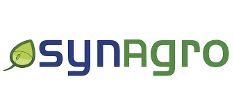
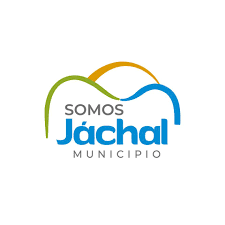

Experiencia laboral
ServinAgro Ir al proyecto
Cree una base de datos en MySql para su posterior analisis tanto para el proveedor como para el cliente de la empresa. Luego se crea la base de datos para consultas y su lectura a traves de graficos.
Mis estudios
Febrero 2024 - Diciembre 2025
Titulo: Tecnico Universitario en programacion

Estudiante de la Universidad Nacional Tecnologica de San Rafael. Estoy capacitado para: Analizar un problema de procesamiento de datos y desarrollarlo en un lenguaje apropiado para su resolución por una computadora, seleccionando el algoritmo adecuado, la técnica de procesamiento correspondiente y conformando un programa correctamente estructurado. · Elaborar y corregir los programas en lenguajes superiores. · Realizar la elaboración detallada de tareas específicas definidas por el Analista de Sistemas de Computación. · Analizar, depurar y transferir la información procesada al especialista que ha de utilizarla.
Proyectos

Proyecto 1
Armado y creacion de base de datos y posterior analisis con herramientas de Python
Ver más GitHub Tecnologias

Proyecto 3
Armado y creacion de base de datos ciudadano para posterior armado de APP.
Ver más GitHub TecnologiasProyecto 4
Armado y creacion de base de datos y posterior analisis con herramientas de Python
Ver más GitHub TecnologiasProyecto 6
Armado y creacion de base de datos ciudadano para posterior armado de APP.
Ver más GitHub Tecnologias